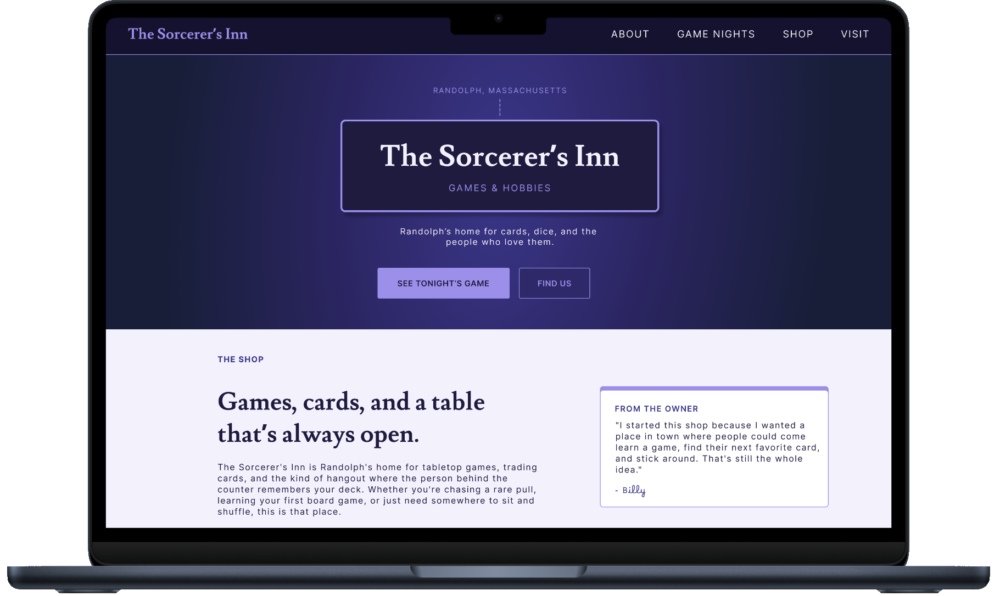

01. Overview
The Sorcerer's Inn is a local tabletop and hobby retail shop. I designed a homepage mockup as self-initiated freelance outreach, translating the shop's in-person energy into a clean, welcoming web presence.
02. Opportunity
Local hobby shops like The Sorcerer's Inn often don't have a strong web presence, relying on foot traffic and word of mouth alone. I saw an opportunity to give the shop a homepage that reflects its identity and could function as a real front door for the business online.
03. Design Process
I designed the homepage without an existing brand style guide to work from, so I had to interpret the shop's identity, cozy, community-driven, a little whimsical, and translate that into a cohesive visual direction. I pitched the concept directly to the owner as a way to open the door to freelance work.

04. Solution & Results
The result was a homepage mockup that captures the shop's tabletop and hobby-store character while staying clean and easy to navigate. It was well received as a concept, and served as a real-world entry point into freelance design outside of coursework.
05. Building the Brand
The Sorcerer's Inn needed to feel like walking into the shop itself, cozy, a little magical, and clearly built for people who love tabletop gaming. Every design decision pulled directly from the shop's existing identity rather than inventing a new one from scratch.
-
Periwinkle
#9B8FEA
-
Midnight Indigo
#1E1B3F
-
Deep Violet
#4A3F86
-
Lavender Mist
#F3F1FC
View the Prototype
Explore the website prototype for The Sorcerer’s Inn, showcasing the site’s design and layout. Click below to see the full experience in Figma.
View Prototype